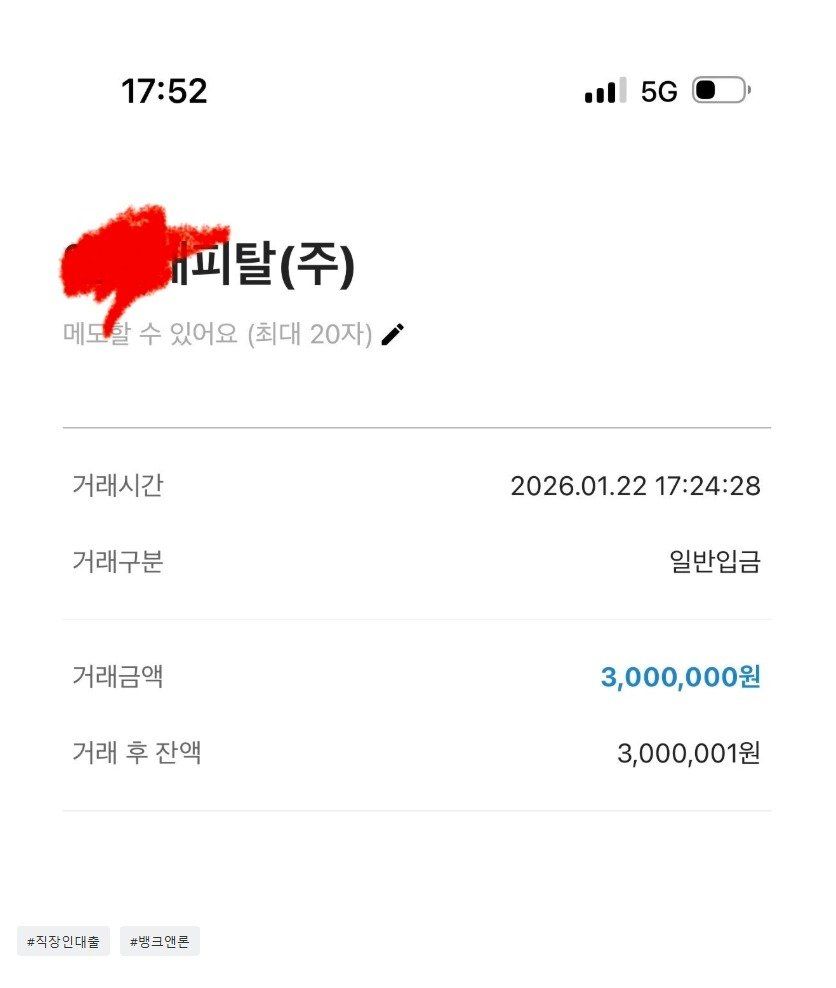

[직장인대출] 막막할 때 도움 주셔서 정말 감사 드립니다.
대출 조건
재직형태: 직장인
재직기간: 2년
사대보험: X
소득: 연 3500
신용등급: KCB 606 NICE 697
채무: 기대출 2000이상
필요서류: 신분증, 초본, 재직증명서, 월급계좌내역
대출 후기
연체만 없으면 된다는 생각을 하며 좀 무책임하게 살았었고,
돈이 급히 필요하면 대출을 받는 식으로 생활하다 보니,
스스로의 신용점수도 잘 몰랐고,
대출이 불가하다는 안내를 받았을 때, 머리가 멍해졌습니다.
1금융은 생각도 안했지만, 나름대로 이곳저곳을 알아봤지만
다 불가하다는 안내만 듣고서
그냥 이렇게 신용불량자가 되는건가 생각했습니다.
검색을 통해 스스로 막연하게 더 찾아보기보다는
전문가 도움을 받아보자 생각하고 뱅크앤론을
알게 되었습니다.
솔직한 심정으로는, 신용점수로 대출이 안 된다는데
도움을 받는다고 가능할까 싶었지만, 뭐라도 의지하고
싶었고, 솔직한 상황을 말씀드렸습니다.
기다리는 시간이 너무 초조했지만, 결국 대출 승인을
받아주셨고, 진심으로 다시 숨을 쉴 수 있었습니다.
도움 주신 이현섭 과장님, 또 특히나 열심히 도와주신
김용혁 이사님께 다시 한번 감사드립니다.

https://cafe.naver.com/cityman88/309977